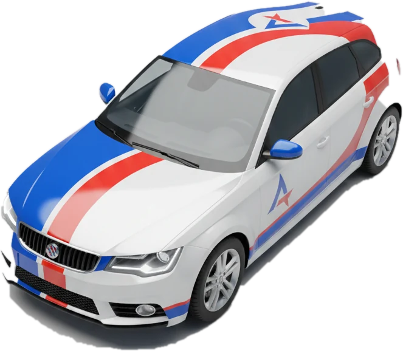
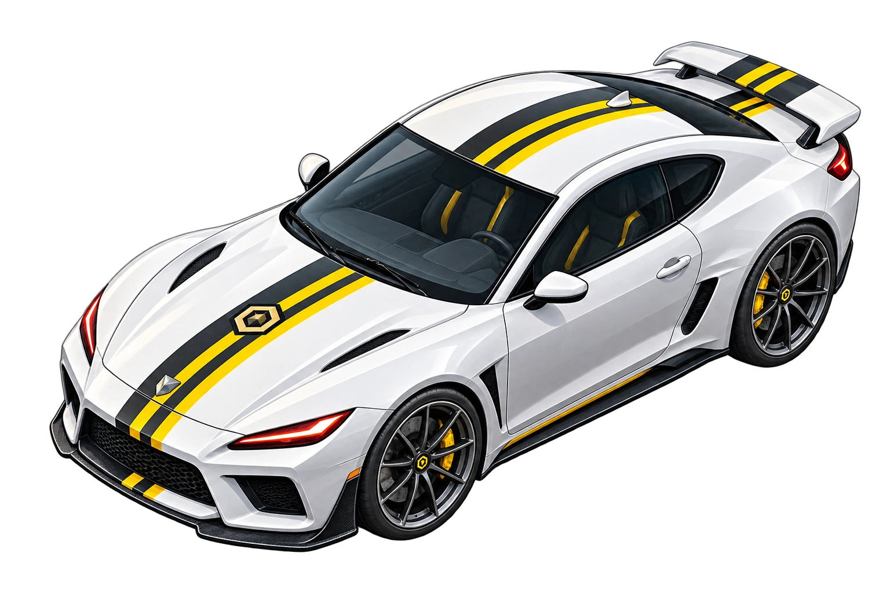

COCHE SELECCIONADO
Avenir Gripline
Listo para competir. Utiliza las físicas oficiales de SlotRace.
Construye. Compite. Colecciona.

Guarda, recupera y comparte tus trazados.
Tu colección de circuitos para montar, correr y compartir.
Hay un circuito anterior que todavía puede recuperarse como creación independiente.
Elige el sentido de conducción. También podrás cambiarlo más adelante desde el taller.
Mejores vueltas guardadas por carril, coche y sentido. Los tiempos de físicas antiguas aparecen identificados como históricos.
Los récords son locales de este navegador. El mejor combinado solo suma tiempos de la misma versión, coche y sentido de carrera.
Los primeros coches del universo Top Down RACE.

Listo para competir. Utiliza las físicas oficiales de SlotRace.

Ya puedes conducirlo. Mismo mando y físicas, con su carrocería cenital original.
Cajas, piezas y planos para ampliar tu universo SlotRace.
Tu caja básica está lista.
Las preferencias se guardan en este dispositivo.
Activa o desactiva los clics del gatillo.
Grabación auténtica de un coche dando vueltas, en bucle mientras circula y sin alterar el tono.
Muestra u oculta la retícula de 25 mm.
Tres acabados sobrios: vino, cian o gris técnico. Cambia el fondo sin alterar la pista ni los pianos.
Muestra con líneas discontinuas la pista oculta bajo puentes y túneles. El coche inferior aparece solo como silueta. Funciona al construir y al jugar.
Se muestra todo el circuito sin mover la cámara.
Acerca el coche incluso en circuitos grandes. Puedes cambiarlo cuando quieras.
La misma identidad de Top Down RACE, con perfiles separados. Tu colección y los récords siguen guardándose aquí hasta que actives una futura copia en la nube.
Los circuitos y los récords se guardan en este navegador. Iniciar sesión no los sube, restaura ni elimina.
Coloca una fotografía o un plano debajo de la pista. Su tamaño no limita el circuito.
No hay imagen cargada.
Los tiempos de esta sesión se muestran hasta que la cierres. Los récords de cada carril se guardan para futuras carreras.